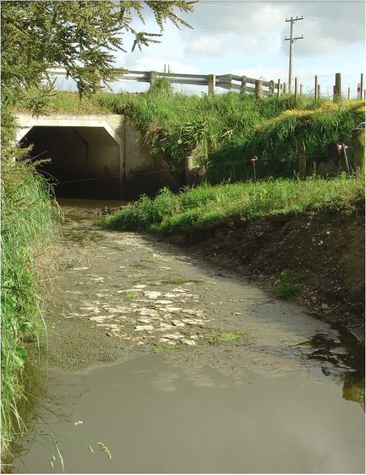
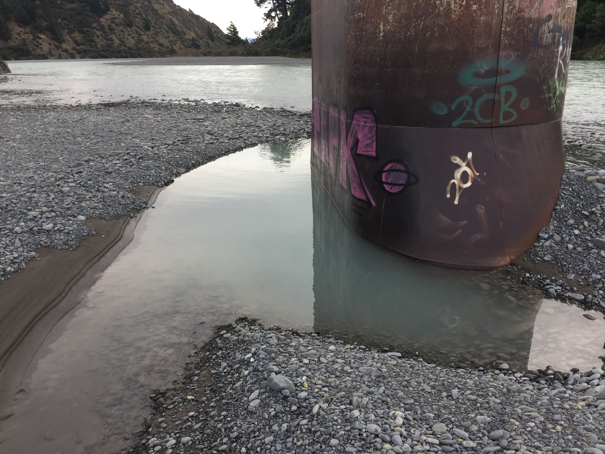

New Zealand is known to have amazing scenery and beautiful lakes and rivers but how healthy are those beautiful lakes and rivers really? New Zealand Rivers used to once be rivers where people loved to swim but now due to contamination lots of the rivers are off limits to the public for swimming. The problem is that people should be allowed to swim in them again and fix the contamination.

Two thirds of our lakes are not able to be swum in and half our lakes are irreversibly damaged. For every litre of milk that is produced 1,000 litres of water in irrigation is used. If the New Zealand waters are polluted that means that all of the water that is being put into the dairy cows that can not be healthy for the milk that 20% of people all across the globe drink.

While a person was researching the waters of Havelock North they found that almost 5,000 of their 15,000 inhabitants were ill from a bug and 3 deaths were later linked to the outbreak of the bug. This could have been bad as this bug had the potential to spread across the country but fortunately was mostly contained to the area.